這本手冊怎麼看
照著順序一步一步做就可以。每一步只做一件事，做完再看下一步。
圖上的1紅色數字框，就是文字裡說要按的地方。文字裡有框起來的字，代表畫面上一模一樣的按鈕或文字。
截圖裡的球場是示意圖，你實際使用時，會看到手機鏡頭拍到的真實畫面。
目錄
第一部分：PitchCam 怎麼用
- 開始前要準備的東西
- 下載 PitchCam
- 第一次打開 PitchCam
- 認識首頁
- 填寫比賽資料
- 認識拍攝畫面
- 開始錄影、停止錄影
- 記錄比分
- 換場次（上半場換下半場）
- 第一次設定直播
- 開始直播
- 直播時網路斷掉怎麼辦
- 結束直播
- 結束比賽、看賽後摘要
- 把影片存到手機的「照片」
- 管理錄影檔（看剩多少空間、刪除）
- 常用設定
- 畫面上出現提示或錯誤訊息怎麼辦
第二部分：用 Facebook 直播
第一部分：PitchCam 怎麼用
1. 開始前要準備的東西
- iPhone：系統要 iOS 18 以上。
- 手機腳架：一場比賽很長，手拿會累也會晃。建議用可以夾住手機的腳架，架在場邊高一點的地方。
- 行動電源和充電線：一邊錄影一邊直播很耗電，建議全程接著行動電源。
- 足夠的儲存空間：4K 畫質一場 90 分鐘大約需要 30 GB，1080p 大約 10 GB。PitchCam 首頁會告訴你還能錄多久。
- 網路（只有要直播才需要）：手機的行動網路或 Wi-Fi 都可以，訊號要穩定。只錄影不直播的話，不需要網路。
2. 下載 PitchCam
- 在 iPhone 主畫面找到藍色的「App Store」圖示，用手指點一下打開它。
- 點畫面右下角的「搜尋」（放大鏡圖示）。
- 點畫面上方的搜尋框，打字輸入 PitchCam，再按鍵盤右下角的「搜尋」。
- 在結果裡找到綠色足球場圖示、名字是「PitchCam 足球直播錄影」的 APP，點它右邊的「取得」。
- 依照手機的提示，按側邊按鈕兩下，或輸入 Apple ID 密碼確認下載。
- 等「取得」變成「打開」，就下載完成了。回到主畫面也會看到 PitchCam 的圖示。
3. 第一次打開 PitchCam
- 在主畫面點 PitchCam 的圖示打開它。
- 把手機橫過來拿。PitchCam 只能橫著用，畫面也是橫的。
- 第一次進入拍攝畫面時，手機會跳出一個小視窗，問你「“PitchCam”要取用你的相機」，請按「允許」。沒有允許的話就沒辦法錄影。
- 接著還會問「“PitchCam”要取用你的麥克風」，也請按「允許」。沒有允許的話，影片會沒有聲音。
- 第一次把影片存到「照片」時，會問你能不能加入照片，請按「允許」或「允許完整取用」。
打開 iPhone 的「設定」APP（灰色齒輪圖示）→ 往下滑找到「PitchCam」並點它 → 把「相機」、「麥克風」右邊的開關打開（變成綠色），「照片」選「加入照片」。
也可以在 PitchCam 裡按 設定 → 一般，看到黃色的 前往開啟 就按它，會直接跳到該打開的地方。
4. 認識首頁
打開 PitchCam 後第一個看到的畫面就是「首頁」。
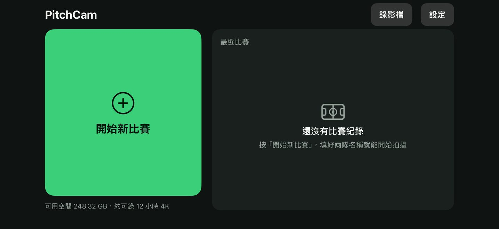
- 1 開始新比賽：大大的綠色按鈕。每次要拍一場新比賽，就按這裡。
- 2 錄影檔：看所有錄好的影片、剩多少空間，也可以在這裡刪除影片。
- 3 設定：調整比分板大小、錄影畫質等等，一般不用動。
綠色按鈕下面的小字會告訴你：手機還剩多少空間、大概還能錄幾個小時。
拍過比賽以後，首頁會多出兩樣東西：
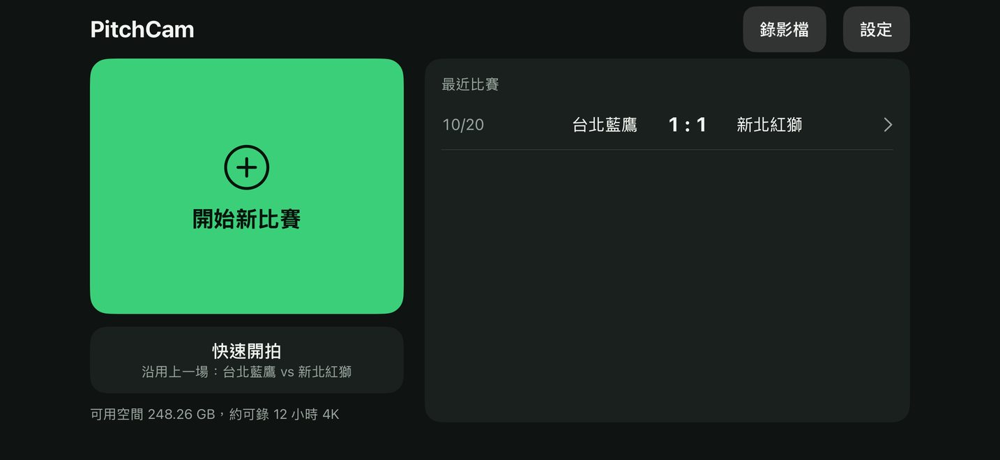
- 1 快速開拍：沿用上一場的兩隊名稱和顏色，按一下直接進入拍攝畫面，不用重新填資料。下面的小字會寫「沿用上一場：某某 vs 某某」。
- 2 右邊「最近比賽」：每一列是一場比賽。點一下可以看那場的賽後摘要。如果寫著黃色的「未結束，點此繼續」，點它會回到拍攝畫面繼續拍。
5. 填寫比賽資料
- 在首頁按 開始新比賽，會看到「比賽設定」畫面。
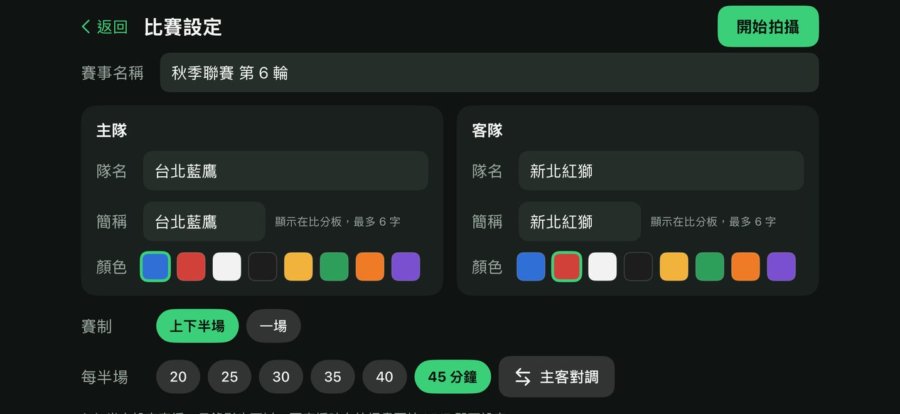
- 1 賽事名稱：點一下這個框，輸入比賽名稱，例如「秋季聯賽 第 6 輪」。不填也可以，不填會自動叫做「友誼賽」。
- 2 主隊名稱：點左邊「主隊」卡片裡的第一個框，輸入主隊的名字，例如「台北藍鷹」。
- 3 簡稱：這是顯示在影片左上角比分板上的短名字，最多 6 個字。輸入隊名後會自動幫你填好，想改再點進去改就好。
- 4 顏色：點一個顏色圓點，代表這一隊的球衣顏色。被選中的圓點外面會有綠色粗框。
- 5 客隊：在右邊「客隊」卡片，用一樣的方法填客隊名字、選顏色。兩隊不要選同一個顏色，不然比分板上分不出來（選到一樣的話，會出現黃色提醒）。
- 6 賽制：一般比賽選 上下半場；如果只踢一節不分上下半場，選 一場。
- 7 比賽時間：點一個數字，選每半場踢幾分鐘（20 到 45 分鐘）。被選中的會變成「45 分鐘」這樣的字。
- 8 主客對調：如果把主隊和客隊填反了，按這個就會整個交換過來。
- 9 全部填好後，按右上角綠色的 開始拍攝，就會進入拍攝畫面。
畫面最下面會寫「本場直播：…」或「尚未設定直播」。只錄影不直播也完全沒問題，要直播時再到拍攝畫面設定就好（見第 10 章）。
6. 認識拍攝畫面
這是拍比賽時一直會看到的畫面。左邊大大的是鏡頭拍到的畫面，這個範圍就是錄進影片的範圍。先認識每個按鈕，後面幾章會一個一個教。
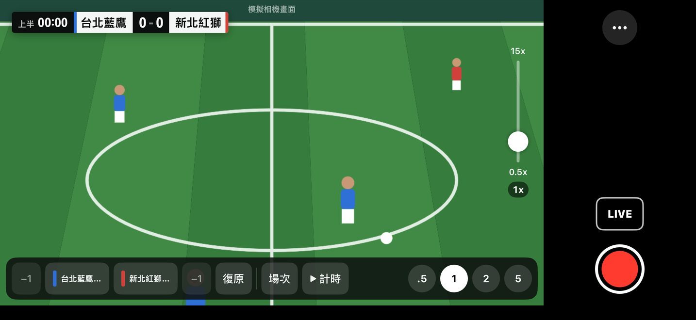
| 編號 | 這是什麼 | 做什麼用 |
|---|---|---|
| 1 | 比分板 | 顯示比分、隊名、時間。會一起錄進影片和直播。點它可以打開比分修改面板。 |
| 2 | 變焦滑桿 | 用手指上下拖，畫面就會拉近或拉遠。 |
| 3 | −1（主隊） | 主隊比分減 1，按錯時用。 |
| 4 | 主隊 +1 | 主隊進球時按這個，比分加 1。 |
| 5 | 客隊 +1 | 客隊進球時按這個，比分加 1。 |
| 6 | −1（客隊） | 客隊比分減 1，按錯時用。 |
| 7 | 復原 | 取消上一個動作，可以一直往回取消。 |
| 8 | 場次 | 切換上半場、下半場、延長賽、PK 大戰。 |
| 9 | 計時 | 開始比賽計時。計時中會變成 暫停，按了就停住。 |
| 10 | 倍率按鈕 | 白色圓形的 .5、1、2、5 等數字，點一下直接換到那個倍率。 |
| 11 | … | 更多功能：比賽設定、轉播設定、結束比賽。 |
| 12 | LIVE | 開始或結束直播。 |
| 13 | 紅色圓形按鈕 | 開始或停止錄影。 |
7. 開始錄影、停止錄影
開始錄影
- 先把手機架好、橫著放，確認左邊的畫面拍得到整個球場。
- 按右下角的紅色圓形按鈕。
- 紅色圓形會變成紅色方塊，按鈕下方開始跑時間（例如 00:04），代表正在錄影。
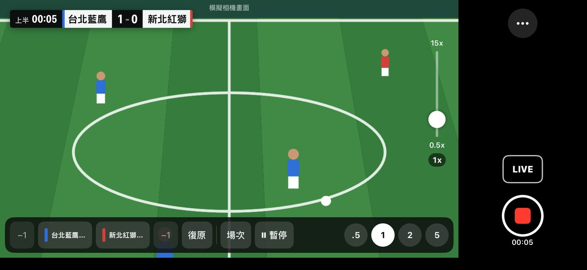
錄影時，PitchCam 會每 5 分鐘自動存一段。就算手機突然沒電或 APP 被關掉，之前錄的也不會不見。
停止錄影
- 再按一次右下角的紅色方塊按鈕。
- 會跳出一個視窗問「停止錄影？」，按紅色的 停止錄影。如果是不小心按到的，按 繼續錄影 就會繼續錄。
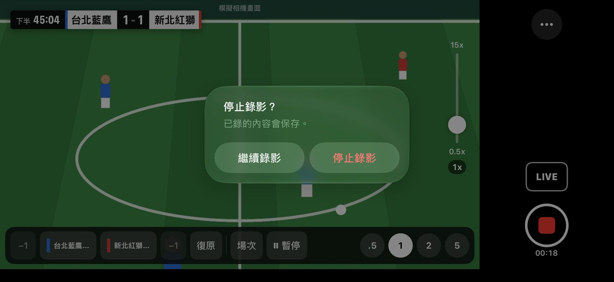
8. 記錄比分
最簡單的方法：按畫面下方的按鈕
- 主隊進球：按 主隊簡稱 +1（例如「台北藍鷹 +1」）。手機會輕輕震一下，比分板馬上更新。
- 客隊進球：按 客隊簡稱 +1。
- 按錯了：按那一隊旁邊的 −1，或按 復原。畫面中間會短暫出現「已復原上一步」。
改更多東西：點比分板
點左上角的比分板，會打開「比分與場次」面板。可以直接改比分、隊名、時間、補時。
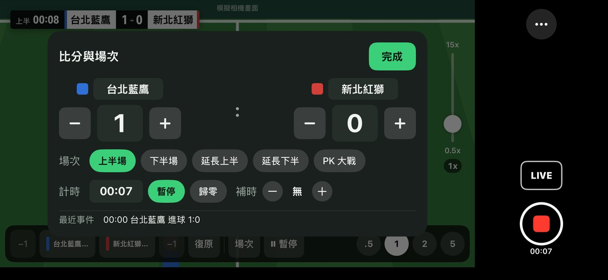
- 1 隊名：點一下可以改比分板上顯示的名字（最多 6 字）。
- 2 −、4 +：比分減 1、加 1。
- 3 比分數字：點一下會出現 0 到 20 的選單，直接選正確的比分。
- 5 場次按鈕：直接換到那個場次。
- 6 時間：點一下可以輸入「分」和「秒」，再按 套用，把比賽時間調成跟裁判一樣。
- 7 開始／暫停：開始或暫停比賽計時。
- 8 歸零：把這個場次的時間歸零。
- 9 補時的 +：每按一下補時加 1 分鐘，比分板上會出現綠色的「+1」「+2」。
- 10 完成：改好了按這個關掉面板。點面板外面的暗色地方也可以關掉。
面板下方的「最近事件」會列出最近 3 個進球，方便你檢查有沒有記錯。
9. 換場次（上半場換下半場）
- 上半場結束時，先按 暫停 把計時停下來。
- 下半場要開始時，按畫面下方的 場次，會跳出選單。
- 點 下半場。目前的場次旁邊會有打勾。
- 開球時按 計時。時間會從 45:00 接著往下跑（以每半場 45 分鐘為例），不是從 0 開始。
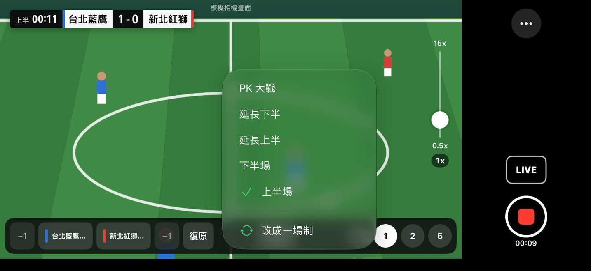
- 延長賽：選 延長上半、延長下半，用法和上下半場一樣。
- PK 大戰：選 PK 大戰。之後按 +1 加的是 PK 進球數，比分板上會出現黃色的「PK 4-3」，原本的比分不會變。
- 換錯場次：按 復原 就能換回來，時間也會一起恢復。
- 其實只踢一節：選單最上面有 改成一場制，按了就不分上下半場。
10. 第一次設定直播
直播需要一組「串流金鑰」，這是直播平台給你的一串英文和數字，就像直播用的密碼。Facebook 的串流金鑰怎麼拿，請先看第 20 章，拿到以後再回來做這一章。YouTube 的串流金鑰在「YouTube 工作室」→「直播」→「串流金鑰」。
- 先把串流金鑰複製到 iPhone（方法見第 21 章）。
- 在拍攝畫面按右邊的 LIVE。第一次按會打開「設定直播」畫面。
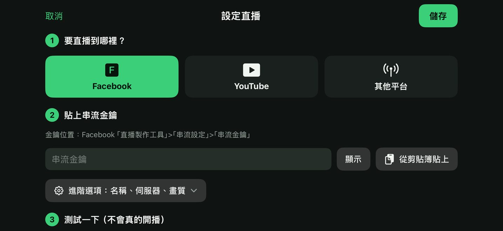
- 1 「要直播到哪裡？」：點你要直播的平台，例如 Facebook。被選中的會變成綠色。
- 2 按 從剪貼簿貼上，剛剛複製的串流金鑰就會自動填進 3 的框裡（會顯示成一個個圓點，這是正常的，按 顯示 可以看到內容）。如果手機跳出「允許貼上嗎？」，請按「允許貼上」。
- 用手指在畫面上往上滑，找到「測試一下（不會真的開播）」。
- 按 測試連線（下圖 1）。這只是測試，不會真的開播，觀眾看不到。
- 等幾秒，看到綠色的「連線成功，可以開播」（下圖 2），就代表設定正確。如果出現紅色的字，看第 18 章的說明。
- 按右上角的 儲存（下圖 3）。以後按 LIVE 就會直接開播，不用再設定。
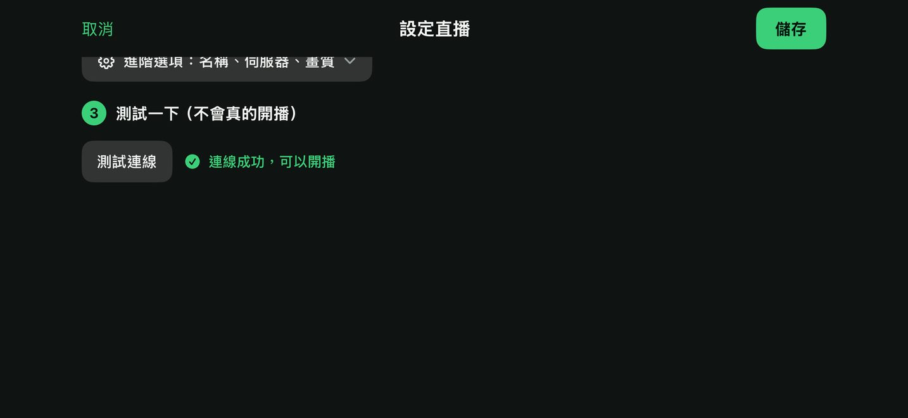
11. 開始直播
- 確認手機有網路（行動網路或 Wi-Fi）。
- 在拍攝畫面按 LIVE。
- 畫面中間會出現很大的倒數數字 3、2、1。這時候 LIVE 按鈕會變成 取消，如果不想開播了，趕快按它。
- 倒數完按鈕會顯示「連線中」，等一下下。
- LIVE 按鈕變成紅色，下面開始跑時間，手機震一下，就代表正在直播了。
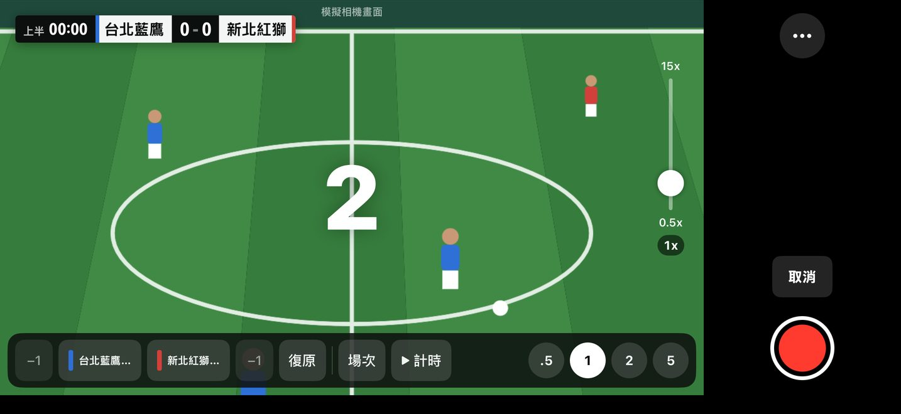
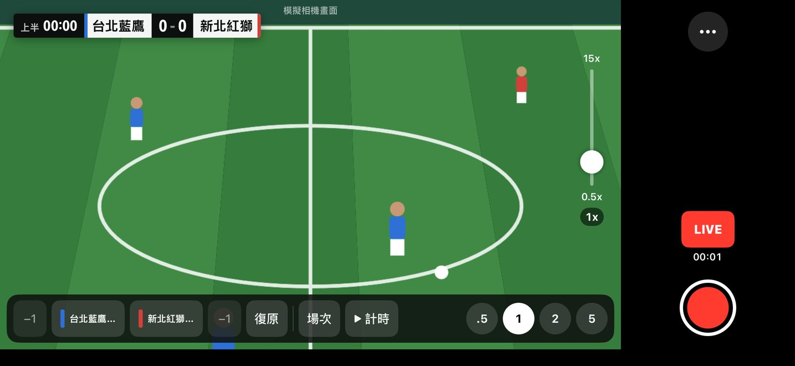
12. 直播時網路斷掉怎麼辦
不用做任何事，PitchCam 會自己重新連線，錄影也不會中斷。
- 重新連線時，LIVE 按鈕會變成黃色，寫著「重連」和次數（例如 2/10），畫面上方會出現「直播重新連線中 2/10，錄影持續中」。
- 網路恢復後，按鈕會自己變回紅色的 LIVE。
- 試了 10 次都連不上，按鈕會變成黃色的 重試，畫面上方寫「直播已中斷」。等網路好一點，按 重試 就會重新開播。
網路一直不穩，可以換個收訊比較好的位置，或改用 Wi-Fi。
13. 結束直播
- 直播中再按一次紅色的 LIVE。
- 跳出「結束直播？」，按紅色的 結束直播。不小心按到的話，按 繼續直播。
- LIVE 按鈕變回原本的樣子，直播就結束了。如果同時在錄影，錄影會繼續，要另外按紅色按鈕停止。
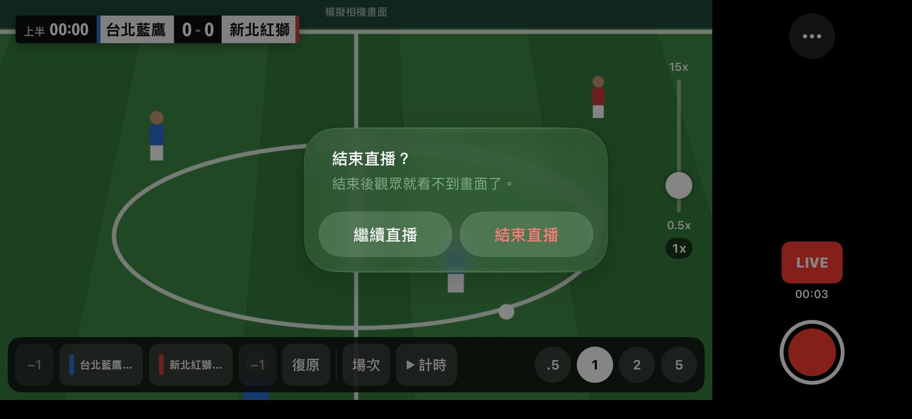
14. 結束比賽、看賽後摘要
- 比賽踢完後，按拍攝畫面右上角的 …。
- 在選單裡按紅色的 結束比賽。
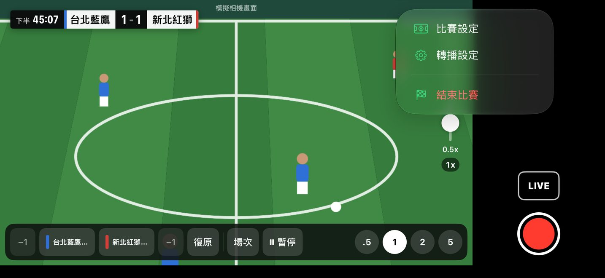
- 跳出「結束這場比賽？」，按紅色的 結束比賽。PitchCam 會自動停止錄影和直播。
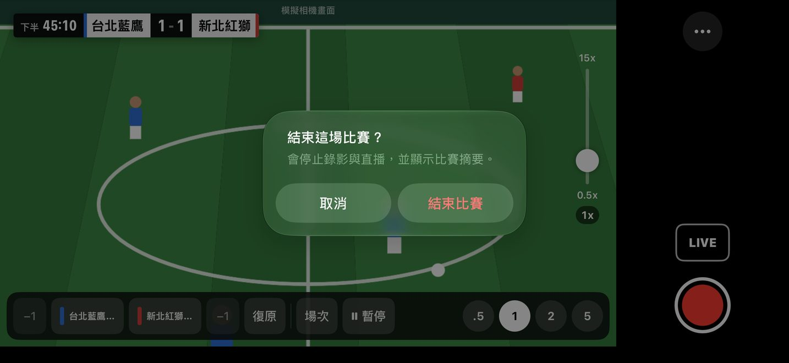
- 接著會看到「比賽結束」的賽後摘要畫面。
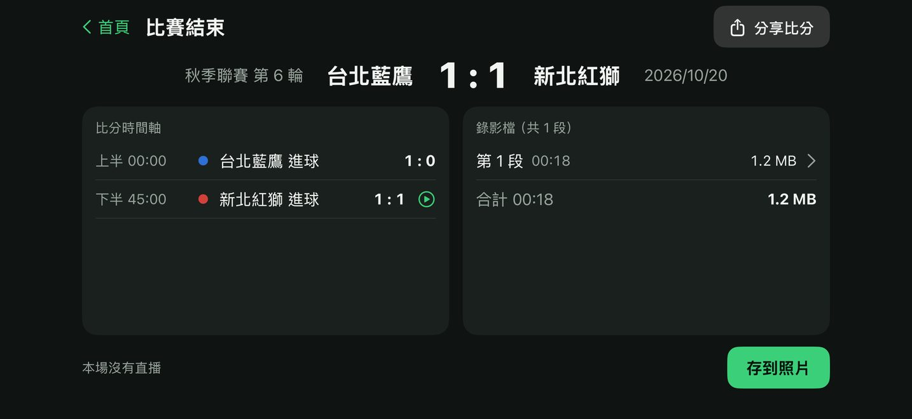
- 1 最後比分。
- 2 「比分時間軸」：每個進球的時間。旁邊有播放圖示的，點一下就會播放進球那一段影片。
- 3 「錄影檔」：這場比賽錄了幾段影片，點一段就能播放。
- 4 存到照片：把影片存到手機的「照片」，見下一章。
- 5 分享比分：把比分和進球時間用 LINE、訊息等傳給別人。
- 6 首頁：回到首頁。
結束比賽後，PitchCam 會記住這兩隊，下次在「常用隊伍」就能直接選。
15. 把影片存到手機的「照片」
錄好的影片先存在 PitchCam 裡面。要用 LINE 傳、上傳到 YouTube 或剪輯，先把它存到「照片」。
- 在賽後摘要按右下角的 存到照片。（也可以從首頁的 錄影檔 存，見下一章。）
- 第一次存的時候，手機會問能不能加入照片，按「允許」。
- 按鈕會變成「處理中…」。PitchCam 正在把每 5 分鐘一段的影片接成一支完整的影片，影片越長等越久，請不要關掉 APP。
- 看到「已存到「照片」。」就完成了，按 好。
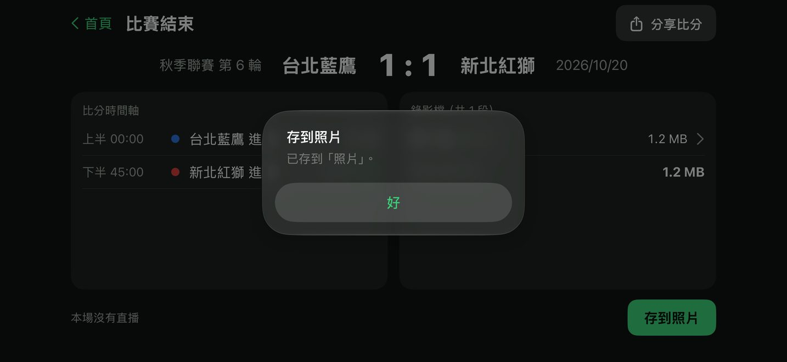
在「照片」裡找影片
- 回到 iPhone 主畫面，打開彩色花朵圖示的「照片」APP。
- 影片會在最新的位置（通常是最下面或最前面）。影片縮圖的右下角會顯示影片長度。
- 點影片就能播放，按左下角的分享圖示可以傳給別人。
16. 管理錄影檔（看剩多少空間、刪除）
- 在首頁按右上角的 錄影檔。
- 右上角會寫「已用多少，可用多少」。
- 每一列是一場比賽的影片。
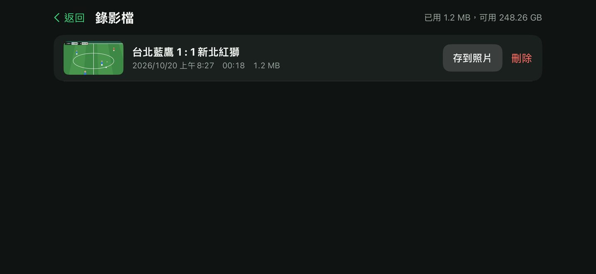
- 1 存到照片：和上一章一樣，把這場的影片存到「照片」。
- 2 刪除：刪掉這場的所有影片。會先問「刪除錄影？」，按紅色 刪除 才會真的刪。刪了就救不回來，請先確定已經存到「照片」。比分紀錄會留著。
17. 常用設定
在首頁按右上角 設定，或在拍攝畫面按 … → 轉播設定。上方有「直播」「錄影」「比分板」「一般」四個分頁。大部分人不需要改任何設定。錄影或直播中，有些選項會鎖住不能改。
比分板
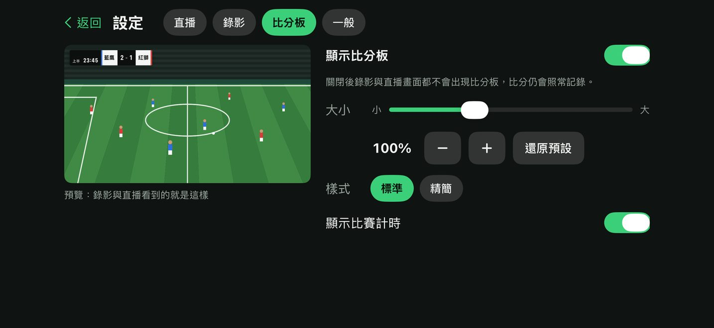
- 1 「顯示比分板」：關掉的話，影片和直播都不會有比分板，但比分還是會記錄。
- 2 大小：拖動滑桿把比分板變大或變小。按 還原預設 回到原本的樣子。
- 3 樣式：「標準」或「精簡」（比較小的一條）。
- 4 「顯示比賽計時」：關掉的話，比分板上不顯示時間。
錄影
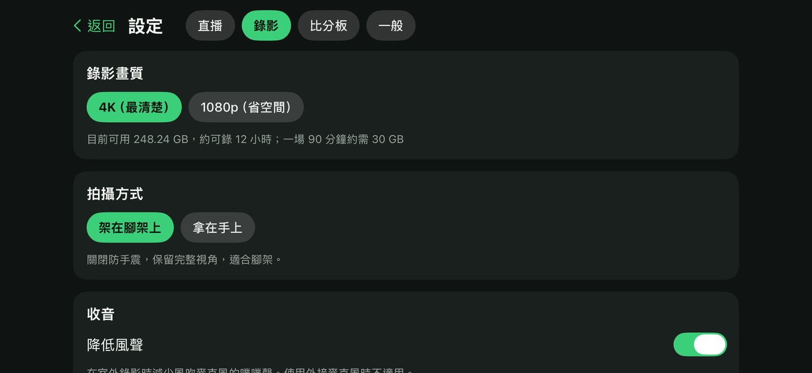
- 1 錄影畫質：「4K（最清楚）」或「1080p（省空間）」。手機空間不夠時選 1080p。比較舊的 iPhone 會固定用 1080p。
- 2 「架在腳架上」：用腳架時選這個，畫面最寬。
- 3 「拿在手上」：用手拿著拍時選這個，畫面比較不會晃，但會稍微變窄。
- 4 「降低風聲」：在室外錄影時，減少風吹麥克風的噗噗聲，建議打開。
一般
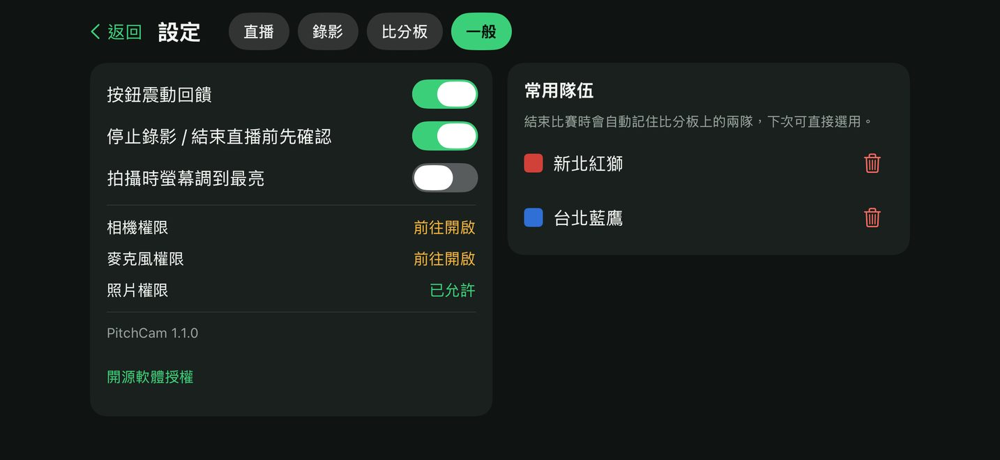
- 1 「停止錄影 / 結束直播前先確認」：打開時，停止前會再問你一次，避免不小心按到。建議保持打開。
- 2 「拍攝時螢幕調到最亮」：大太陽下看不清楚螢幕時可以打開，但比較耗電。
- 下面的「相機權限」「麥克風權限」「照片權限」顯示綠色「已允許」才是正常的。
18. 畫面上出現提示或錯誤訊息怎麼辦
拍攝畫面上方的黃色提示
| 看到的文字 | 意思 | 怎麼做 |
|---|---|---|
| 請將手機轉為橫向拿，畫面方向才會正確 | 手機直著拿 | 把手機橫過來。 |
| 畫面上下顛倒，請關閉方向鎖定或把手機轉回來 | 手機拿反了 | 把手機轉 180 度；或從螢幕右上角往下滑，關掉有鎖頭圖示的「方向鎖定」。 |
| 手機溫度偏高，請避免陽光直射 | 手機太熱 | 幫手機遮陽、拿掉手機殼。直播畫質可能會自動降低，溫度下來就會恢復。 |
| 儲存空間只剩約 N 分鐘 | 手機快滿了 | 到「錄影檔」把已經存到「照片」的舊影片刪掉。 |
| 電量 N%，建議接上行動電源 | 電量低於 20% | 接上行動電源。 |
| 直播重新連線中 N/10 | 網路斷了，正在重連 | 等它自己連上，見第 12 章。 |
| 直播已中斷：…。按 LIVE 可重新開播 | 重連 10 次都失敗 | 確認網路後按 重試。 |
跳出「無法執行」視窗
| 看到的文字 | 怎麼做 |
|---|---|
| 儲存空間不足，請先刪除舊的錄影檔 | 到「錄影檔」刪除舊影片，或刪掉手機裡其他用不到的東西。 |
| 畫面方向不正確，無法開始。請將手機轉為橫向後再試。 | 把手機橫過來，再按一次。 |
| 直播設定有問題：… | 依後面寫的原因修正直播設定，見下表。 |
測試連線失敗的原因
| 看到的文字 | 怎麼做 |
|---|---|
| 尚未填入串流金鑰 | 先複製串流金鑰，再按「從剪貼簿貼上」。 |
| 串流金鑰中不應有空白，請重新貼上 | 金鑰複製到多餘的字，重新複製一次再貼上。 |
| 伺服器拒絕連線，請確認串流金鑰是否正確或已過期 | 金鑰錯了或換過。回 Facebook 重新複製最新的串流金鑰。 |
| 連線逾時，請確認網路或伺服器網址 | 手機網路不好，換個地方或改用 Wi-Fi 再試。 |
| 無法連到伺服器，請確認網路與伺服器網址 | 確認手機有網路；如果改過「進階選項」裡的伺服器，改回原本的。 |
| 伺服器網址格式不正確，應以 rtmp:// 或 rtmps:// 開頭 | 「進階選項」裡的伺服器填錯了。重新選一次平台，網址就會自動填回正確的。 |
相機和存檔
| 看到的文字 | 怎麼做 |
|---|---|
| 尚未允許使用相機 | 按下面的「前往「設定」開啟權限」，把相機開關打開。 |
| 相機暫時被系統中斷，稍候會自動恢復 | 可能有電話打進來或開了別的相機 APP，等一下就好。 |
| 相機發生錯誤，請離開拍攝畫面再進入 | 關掉 PitchCam 再打開（從螢幕最下面往上滑到一半停住，把 PitchCam 往上滑掉），然後在首頁「最近比賽」點這場的「未結束，點此繼續」，就會回到拍攝畫面，比分都還在。 |
| 沒有「照片」的寫入權限… | 到 iPhone「設定」→「PitchCam」→「照片」，選「加入照片」。 |
第二部分：用 Facebook 直播
19. 先知道這幾件事
- PitchCam 是用 Facebook 的「串流軟體」方式直播。你要先到 Facebook 拿一組「串流金鑰」，貼進 PitchCam。
- 拿串流金鑰要用電腦（Windows 或 Mac 都可以）的瀏覽器，例如 Chrome、Edge、Safari。
- 可以直播到你的個人檔案、你管理的粉絲專頁，或你有權限的社團。
- 只要設定一次「持續性串流金鑰」，以後每場比賽都用同一組金鑰，不用每次重拿。
- 每次開播時，PitchCam 先開始傳畫面，再到 Facebook 按「開始直播」，觀眾才看得到。
Facebook 的畫面偶爾會改版，如果看到的跟這裡不一樣，可以參考 Facebook 說明中心。本章依 2026 年 10 月的 Facebook 畫面撰寫，截圖中的個人資料已經遮蔽。
20. 在電腦上拿到 Facebook 的串流金鑰
- 打開電腦，打開瀏覽器（Chrome、Edge 或 Safari）。
- 在最上面的網址列輸入 facebook.com/live/create，按鍵盤的 Enter。
- 如果還沒登入，輸入你的 Facebook 帳號密碼登入。登入後會看到「建立直播視訊」頁面。
- 在左邊找到 選擇發佈位置，點它打開選單。

- 選一個要直播的地方：
- 直播到自己的頁面：選 發佈到個人檔案。
- 直播到球隊粉絲專頁：選 發佈到你管理的粉絲專頁，再點你的粉絲專頁。
- 直播到球隊社團：選 發佈到社團，再點你的社團。
- 在右邊「開始直播」的白色卡片裡，按下面藍色的 設定直播視訊。

- 在「選擇視訊來源」，點有鑰匙圖示的 串流軟體。不要選「網路攝影機」。「你什麼時候開始直播？」保持「現在」就好。

- 用滑鼠滾輪往下捲，找到「串流軟體設定」。
- 點 進階設定，把它展開。

- 把 持續性串流金鑰 右邊的開關打開（變成藍色）。打開以後，這組金鑰以後每次直播都能用。
- 看一下「伺服器網址」，開頭應該是 rtmps://live-api-s.facebook.com。PitchCam 已經自動填好這個網址，不用複製。
- 往上捲回「串流金鑰」，按它右邊的 複製。串流金鑰就複製好了。

21. 把串流金鑰送到 iPhone
金鑰現在在電腦裡，要想辦法讓 iPhone 也複製到它。選一個你會用的方法：
方法 A：電腦是 Mac，而且和 iPhone 登入同一個 Apple ID
- 在 Mac 上按了「複製」以後，什麼都不用做。
- iPhone 會自動拿到同一份複製內容（Apple 的「通用剪貼簿」）。兩台都要打開藍牙和 Wi-Fi，而且要放在旁邊。
- 直接到 PitchCam 按 從剪貼簿貼上。
方法 B：傳訊息給自己（任何電腦都可以）
- 在電腦上打開你常用的通訊軟體（例如 LINE 電腦版），或電子郵件。
- 開一個只有你自己的聊天室（LINE 可以用「Keep 筆記」），或寫一封信寄給自己。
- 在輸入框點一下，按鍵盤 Ctrl + V（Mac 是 ⌘ + V）貼上金鑰，送出。
- 在 iPhone 打開同一個聊天室或信件，用手指按住那串金鑰不放，出現選單後點「拷貝」。
- 到 PitchCam 按 從剪貼簿貼上。
- 貼好以後，建議把那則訊息或信刪掉，避免別人看到。
22. 把串流金鑰貼進 PitchCam
照第 10 章做：在 PitchCam 拍攝畫面按 LIVE → 選 Facebook → 從剪貼簿貼上 → 測試連線 → 看到「連線成功，可以開播」→ 儲存。
因為已經打開「持續性串流金鑰」，這件事只要做一次。以後每場比賽直接按 LIVE 就好。
23. 比賽當天怎麼開播
開播需要手機和 Facebook 兩邊都按。建議由一個人顧手機、另一個人用電腦或手機開 Facebook。
- 在電腦打開 facebook.com/live/create，照第 20 章第 4 到 7 步，選好發佈位置、按「設定直播視訊」、選「串流軟體」。
- 在右邊「新增貼文詳細資料」，點「你直播視訊的主題為何？」輸入標題，例如「秋季聯賽 第 6 輪 台北藍鷹 vs 新北紅獅」。
- 在 PitchCam 按 LIVE，等按鈕變成紅色。
- 回到 Facebook，等幾秒鐘，中間黑色的預覽區會出現 PitchCam 拍到的畫面（含比分板）。
- 按左下角藍色的 開始直播。到這一步，觀眾才看得到。
結束的時候
- 先在 Facebook 按「結束直播」並確認。
- 再到 PitchCam 按紅色的 LIVE → 結束直播（見第 13 章）。
- 直播影片會留在你的 Facebook 個人檔案、粉絲專頁或社團上。
24. Facebook 直播常見問題
Facebook 中間一直顯示「連結串流軟體以開始直播」，沒有畫面？
代表 Facebook 還沒收到 PitchCam 的畫面。確認 PitchCam 的 LIVE 已經是紅色；如果是黃色或「重試」，先處理網路問題。再確認 PitchCam 裡貼的金鑰和 Facebook 上的一樣（Facebook 按過「重設」的話要重新貼）。
PitchCam 測試連線出現「伺服器拒絕連線」？
金鑰不對或已經失效。回到 Facebook 重新按「複製」，再到 PitchCam 的 設定 → 直播 → 那一筆的 編輯，重新貼上並測試。
沒有打開「持續性串流金鑰」會怎樣？
金鑰只能用一陣子（Facebook 寫著「此串流金鑰在你登出 Facebook 帳號之前都有效」），之後要重新拿、重新貼。建議打開。
觀眾說看不到直播？
確認 Facebook 上已經按了「開始直播」，而且貼文的分享對象是觀眾看得到的範圍（例如「公開」或社團成員）。
畫面很卡？
直播需要穩定的上傳網路，建議至少 5 Mbps。換到收訊好的位置；PitchCam 的直播畫質用「自動（建議）」，網路差時會自動降到 720p。